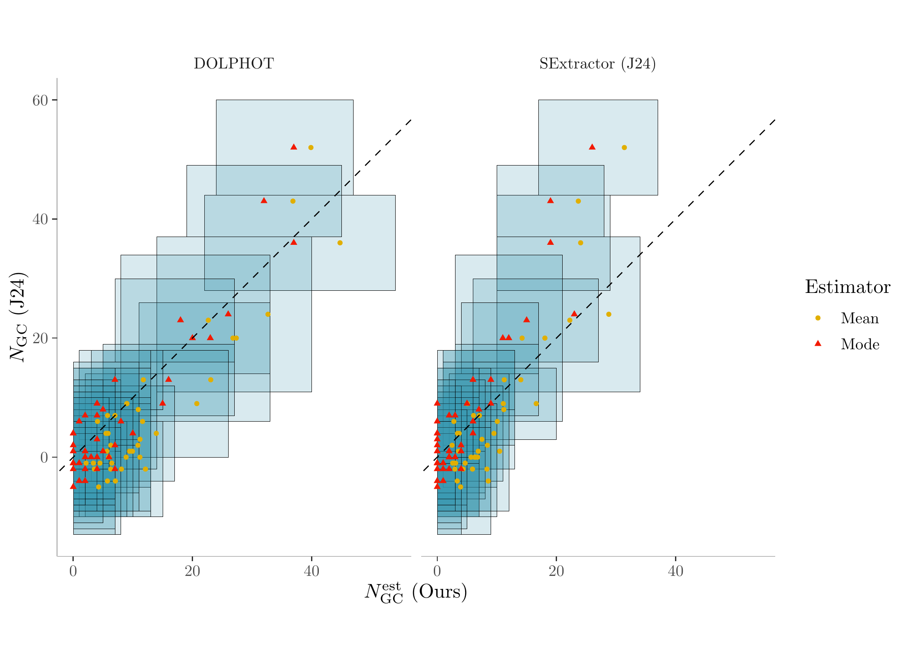

Last updated: 2024-07-04
Checks: 7 0
Knit directory: MATHPOP/
This reproducible R Markdown analysis was created with workflowr (version 1.7.1). The Checks tab describes the reproducibility checks that were applied when the results were created. The Past versions tab lists the development history.
Great! Since the R Markdown file has been committed to the Git repository, you know the exact version of the code that produced these results.
Great job! The global environment was empty. Objects defined in the global environment can affect the analysis in your R Markdown file in unknown ways. For reproduciblity it’s best to always run the code in an empty environment.
The command set.seed(20240702) was run prior to running
the code in the R Markdown file. Setting a seed ensures that any results
that rely on randomness, e.g. subsampling or permutations, are
reproducible.
Great job! Recording the operating system, R version, and package versions is critical for reproducibility.
Nice! There were no cached chunks for this analysis, so you can be confident that you successfully produced the results during this run.
Great job! Using relative paths to the files within your workflowr project makes it easier to run your code on other machines.
Great! You are using Git for version control. Tracking code development and connecting the code version to the results is critical for reproducibility.
The results in this page were generated with repository version 98834e5. See the Past versions tab to see a history of the changes made to the R Markdown and HTML files.
Note that you need to be careful to ensure that all relevant files for
the analysis have been committed to Git prior to generating the results
(you can use wflow_publish or
wflow_git_commit). workflowr only checks the R Markdown
file, but you know if there are other scripts or data files that it
depends on. Below is the status of the Git repository when the results
were generated:
Ignored files:
Ignored: .DS_Store
Ignored: analysis/.DS_Store
Ignored: analysis/GC_prob_cache/
Ignored: data/.DS_Store
Ignored: data/GC_prob/.DS_Store
Ignored: data/point_source_data/.DS_Store
Ignored: data/prob_GC_data/.DS_Store
Ignored: data/sim/.DS_Store
Ignored: data/v10acs/.DS_Store
Ignored: data/v10wfc3/.DS_Store
Ignored: data/v11acs/.DS_Store
Ignored: data/v11wfc3/.DS_Store
Ignored: data/v12acs/.DS_Store
Ignored: data/v12wfc3/.DS_Store
Ignored: data/v13acs/.DS_Store
Ignored: data/v13wfc3/.DS_Store
Ignored: data/v14acs/.DS_Store
Ignored: data/v14wfc3/.DS_Store
Ignored: data/v15acs/.DS_Store
Ignored: data/v15wfc3/.DS_Store
Ignored: data/v6acs/.DS_Store
Ignored: data/v6wfc3/.DS_Store
Ignored: data/v7acs/.DS_Store
Ignored: data/v8acs/.DS_Store
Ignored: data/v9acs/.DS_Store
Ignored: data/v9wfc3/.DS_Store
Unstaged changes:
Modified: code/help_functions.R
Note that any generated files, e.g. HTML, png, CSS, etc., are not included in this status report because it is ok for generated content to have uncommitted changes.
These are the previous versions of the repository in which changes were
made to the R Markdown (analysis/posterior.Rmd) and HTML
(docs/posterior.html) files. If you’ve configured a remote
Git repository (see ?wflow_git_remote), click on the
hyperlinks in the table below to view the files as they were in that
past version.
| File | Version | Author | Date | Message |
|---|---|---|---|---|
| Rmd | 98834e5 | david.li | 2024-07-04 | wflow_publish(c("analysis/_site.yml", "analysis/posterior.Rmd", |
This vignette provides the code for the analysis of the posterior results of MATHPOP model fitted to the 40 Perseus LSBGs considered in the original Li et al. (2024) paper. It also reproduces Figure 4 and provides the data contained in Table 3 of the paper. To fit the MATHPOP model, see here.
Due to the computational time to fit the MATHPOP model and the size
of the MCMC results, we will not be fitting the model in any of the
vignettes in this Github repo. We instead have post-processed and saved
three individual runs of the MCMC runs of the MATHPOP model for each
individual image we considered. These are contained in the
data/v#### folders, where v### is the imaging
field ID. For example, data/v11acs/res_prob_v11acs.RDS
contains the MCMC results for the MATHPOP model fitted to the DOLPHOT GC
data.
We first load all required packages and read in the MCMC results for MATHPOP models fitted to probabilistic GC catalog from DOLPHOT:
library(tidyverse)
library(ggpubr)
library(ggridges)
library(tikzDevice)
library(posterior)
library(xtable)
library(wesanderson)
library(ggnewscale)
library(modeest)
library(reshape2)
library(HDInterval)
# read in file paths
fnames <- list.files('data/')
fnames <- fnames[grepl('v', fnames)]
file_paths <- paste0('data/',fnames,'/')
# construct data frames for each model parameter of the GC system of a UDG
summary_NGC <- data.frame()
summary_RGC <- data.frame()
summary_muGC <- data.frame()
# generate a data frame containing all summary statistics of the model parameters
set.seed(123456)
# loop through each image
for(i in 1:length(fnames)){
res_i_name <- paste0(file_paths[i], 'res_prob_', fnames[i], '.RDS')
file_read <- readRDS(res_i_name)
# GC count summary
N_GC <- as.data.frame(apply(file_read[, grepl( "N_" , names(file_read)) & !grepl( "gal" , names(file_read))], 2,
function(x) rpois(nrow(file_read), x)))
# Half-number radius summary
R_GC <- as.data.frame(file_read[, grepl( "R_" , names(file_read)) & !grepl( "gal" , names(file_read))])
# GCLF TO summary
mu_GC <- as.data.frame(file_read[, grepl( "mu_" , names(file_read)) & !grepl( "gal" , names(file_read)) & !grepl( "_0" , names(file_read))])
UDG_ID <- gsub('N_', '', colnames(N_GC))
colnames(N_GC) <- UDG_ID
colnames(R_GC) <- UDG_ID
colnames(mu_GC) <- UDG_ID
# obtain summary statistics for GC counts
N_GC <- melt(N_GC)
summary_N <- N_GC %>%
rename(ID = variable) %>%
group_by(ID) %>%
summarise_all(list(N_mode = mlv, N_median = median, N_mean = mean,
N_HDI_0.68_lower = function(x) hdi(x, 0.68)[1],
N_HDI_0.68_upper = function(x) hdi(x, 0.68)[2],
`P(N_GC = 0)` = function(x) mean(x == 0)))
# obtain summary statistics for half-number radius
R_GC <- melt(R_GC)
summary_R <- R_GC %>%
rename(ID = variable) %>%
group_by(ID) %>%
summarise_all(list(R_mode = mlv, R_median = median, R_mean = mean,
R_HDI_0.68_lower = function(x) hdi(x, 0.68)[1],
R_HDI_0.68_upper = function(x) hdi(x, 0.68)[2]))
# obtain summary statistics for GCLF TO
mu_GC <- melt(mu_GC)
summary_mu <- mu_GC %>%
rename(ID = variable) %>%
group_by(ID) %>%
summarise_all(list(mu_mode = mlv, mu_median = median, mu_mean = mean,
mu_HDI_0.68_lower = function(x) hdi(x, 0.68)[1],
mu_HDI_0.68_upper = function(x) hdi(x, 0.68)[2],
mu_HDI_0.95_lower = function(x) hdi(x, 0.95)[1],
mu_HDI_0.95_upper = function(x) hdi(x, 0.95)[2]))
summary_NGC <- bind_rows(summary_NGC, summary_N)
summary_RGC <- bind_rows(summary_RGC, summary_R)
summary_muGC <- bind_rows(summary_muGC, summary_mu)
}
summary_NGC$ID <- as.character(summary_NGC$ID)
summary_RGC$ID <- as.character(summary_RGC$ID)
summary_muGC$ID <- as.character(summary_muGC$ID)
# W7 is observed in both V12-ACS and V14-ACS
summary_NGC$ID[13] <- summary_RGC$ID[13] <- summary_muGC$ID[13] <- 'W7 (V12ACS)'
summary_NGC$ID[22] <- summary_RGC$ID[22] <- summary_muGC$ID[22] <- 'W7 (V14ACS)'
# post-processing
summary_muGC <- summary_muGC %>%
mutate(minus_mu = mu_mean - mu_HDI_0.68_lower, plus_mu = mu_HDI_0.68_upper - mu_mean)
summary_RGC <- summary_RGC %>%
mutate(minus_R = R_mode - R_HDI_0.68_lower, plus_R = R_HDI_0.68_upper - R_mode)
summary_NGC <- summary_NGC %>%
mutate_at(2:7, as.numeric) %>%
arrange(`P(N_GC = 0)`)
# GC count summary from Janssens et al. 2024
Jans_NGC <- data.frame(ID = summary_NGC$ID) %>%
mutate(Janssens = c(36, 52, 43, 20, 24, 23, 13, 20, 4, 9, 6, 13, 2, -2, 0, 8, 1, 9, 7, 9, 0, -2, 3,
0, 7, -2, 0, 1, -4, -1, 1, -4, 4, 2, 6, 4, -1, -5, -2, -1, -1),
J_se = c(8, 8, 6, 6, 13, 7, 6, 14, 8, 9, 8, 5, 7, 8, 10, 10, 7, 6, 6, 7, 10, 8, 12, 7,
8, 10, 9, 10, 9, 7, 8, 9, 8, 9, 7, 6, 5, 6, 7, 7, 7),
Re = c(2.16, 2.23, 1.99, 1.42, 5.44, 4.57, 2.72, 1.83, 1.15, 1.5, 2.22, 2.31, 1.59, 2.11,
1.17, 1.8, 1.31, 2.58, 1.92, 1.99, 1.17, 1.72, 1.67, 1.82, 1.5, 0.83, 0.97, 3.7,
3.13, 1.5, 0.91, 1.5, 0.96, 0.63, 1, 1.31, 1.54, 1.84, 1.31, 0.64, 0.81))
summary_NGC <- merge(summary_NGC, Jans_NGC)
summary_dat <- merge(merge(summary_NGC, summary_muGC, by = 'ID'), summary_RGC, by = 'ID') %>%
arrange(desc(N_mode)) %>%
mutate(data = 'DOLPHOT')We will do the same for results obtained using SExtractor (J24) probabilistic GC catalog, and combine the summary table with the one from DOLPHOT:
# everything here is the same as above, only changing the object names to identify it is based on J24.
summary_NGC_J <- data.frame()
summary_RGC_J <- data.frame()
summary_muGC_J <- data.frame()
set.seed(123456)
for(i in 1:length(fnames)){
res_i_name <- paste0(file_paths[i], 'res_prob_', fnames[i], '_Jans.RDS')
file_read <- readRDS(res_i_name)
N_GC <- as.data.frame(apply(file_read[, grepl( "N_" , names(file_read)) & !grepl( "gal" , names(file_read))], 2,
function(x) rpois(nrow(file_read), x)))
R_GC <- as.data.frame(file_read[, grepl( "R_" , names(file_read)) & !grepl( "gal" , names(file_read))])
mu_GC <- as.data.frame(file_read[, grepl( "mu_" , names(file_read)) & !grepl( "gal" , names(file_read)) & !grepl( "_0" , names(file_read))])
UDG_ID <- gsub('N_', '', colnames(N_GC))
colnames(N_GC) <- UDG_ID
colnames(R_GC) <- UDG_ID
colnames(mu_GC) <- UDG_ID
N_GC <- melt(N_GC)
summary_N <- N_GC %>%
rename(ID = variable) %>%
group_by(ID) %>%
summarise_all(list(N_mode = mlv, N_median = median, N_mean = mean,
N_HDI_0.68_lower = function(x) hdi(x, 0.68)[1],
N_HDI_0.68_upper = function(x) hdi(x, 0.68)[2],
`P(N_GC = 0)` = function(x) mean(x == 0)))
R_GC <- melt(R_GC)
summary_R <- R_GC %>%
rename(ID = variable) %>%
group_by(ID) %>%
summarise_all(list(R_mode = mlv, R_median = median, R_mean = mean,
R_HDI_0.68_lower = function(x) hdi(x, 0.68)[1],
R_HDI_0.68_upper = function(x) hdi(x, 0.68)[2]))
mu_GC <- melt(mu_GC)
summary_mu <- mu_GC %>%
rename(ID = variable) %>%
group_by(ID) %>%
summarise_all(list(mu_mode = mlv, mu_median = median, mu_mean = mean,
mu_HDI_0.68_lower = function(x) hdi(x, 0.68)[1],
mu_HDI_0.68_upper = function(x) hdi(x, 0.68)[2],
mu_HDI_0.95_lower = function(x) hdi(x, 0.95)[1],
mu_HDI_0.95_upper = function(x) hdi(x, 0.95)[2]))
summary_NGC_J <- bind_rows(summary_NGC_J, summary_N)
summary_RGC_J <- bind_rows(summary_RGC_J, summary_R)
summary_muGC_J <- bind_rows(summary_muGC_J, summary_mu)
}
summary_NGC_J$ID <- as.character(summary_NGC_J$ID)
summary_RGC_J$ID <- as.character(summary_RGC_J$ID)
summary_muGC_J$ID <- as.character(summary_muGC_J$ID)
summary_NGC_J$ID[13] <- summary_RGC_J$ID[13] <- summary_muGC_J$ID[13] <- 'W7 (V12ACS)'
summary_NGC_J$ID[22] <- summary_RGC_J$ID[22] <- summary_muGC_J$ID[22] <- 'W7 (V14ACS)'
summary_NGC_J <- summary_NGC_J %>%
mutate_at(2:7, as.numeric) %>%
arrange(`P(N_GC = 0)`)
summary_NGC_J <- merge(summary_NGC_J, Jans_NGC)
summary_dat_J <- merge(merge(summary_NGC_J, summary_muGC_J, by = 'ID'), summary_RGC_J, by = 'ID') %>%
arrange(desc(N_mode)) %>%
mutate(data = 'SExtractor (J24)')Now we can plot the GC count comparison results using the two summary data sets:
# grabbing the summary statistics of GC counts from the two summary datasets
N_sum <- bind_rows(summary_dat, summary_dat_J) %>%
dplyr::select(ID, N_mean, N_mode, N_HDI_0.68_lower, N_HDI_0.68_upper, Janssens, J_se, data) %>%
melt(., id = c('ID', 'data', 'Janssens', 'J_se','N_HDI_0.68_lower', 'N_HDI_0.68_upper')) %>%
mutate(variable = ifelse(variable == 'N_mean', 'Mean', 'Mode'))
# plot it
color <- c('Mean' = "#E1AF00", 'Mode' = "#F21A00")
ggplot(N_sum, aes(value, Janssens, color = variable)) +
geom_rect(aes(xmin = N_HDI_0.68_lower, xmax = N_HDI_0.68_upper, ymin = Janssens - J_se, ymax = Janssens + J_se), fill = '#3B9AB2', color = 'black', alpha = 0.1, size = 0.1) +
geom_point(size = 1) + geom_abline(slope = 1, intercept = 0, linetype = 'dashed') +
xlab('$N_GC^est (Ours)') + ylab('N_GC (J24)') + coord_fixed() + labs(color = 'Estimator') +
theme(panel.grid.major = element_blank(), panel.background = element_blank(),
panel.grid.minor = element_blank(), axis.line = element_line(colour = "gray"),
strip.background = element_blank()) +
scale_color_manual(values = color) +
facet_wrap(.~data)
Note that Table 3 in the paper are not generated through code,
although the numerical results are all contained in
summary_dat and summary_dat_J.
sessionInfo()R version 4.3.2 (2023-10-31)
Platform: aarch64-apple-darwin20 (64-bit)
Running under: macOS Sonoma 14.1.1
Matrix products: default
BLAS: /Library/Frameworks/R.framework/Versions/4.3-arm64/Resources/lib/libRblas.0.dylib
LAPACK: /Library/Frameworks/R.framework/Versions/4.3-arm64/Resources/lib/libRlapack.dylib; LAPACK version 3.11.0
locale:
[1] en_US.UTF-8/en_US.UTF-8/en_US.UTF-8/C/en_US.UTF-8/en_US.UTF-8
time zone: America/Toronto
tzcode source: internal
attached base packages:
[1] stats graphics grDevices utils datasets methods base
other attached packages:
[1] HDInterval_0.2.4 reshape2_1.4.4 modeest_2.4.0 ggnewscale_0.4.10
[5] wesanderson_0.3.7 xtable_1.8-4 posterior_1.5.0 tikzDevice_0.12.5
[9] ggridges_0.5.6 ggpubr_0.6.0 lubridate_1.9.3 forcats_1.0.0
[13] stringr_1.5.1 dplyr_1.1.4 purrr_1.0.2 readr_2.1.4
[17] tidyr_1.3.0 tibble_3.2.1 ggplot2_3.4.4 tidyverse_2.0.0
[21] workflowr_1.7.1
loaded via a namespace (and not attached):
[1] tidyselect_1.2.0 filehash_2.4-5 timeDate_4022.108
[4] farver_2.1.1 fastmap_1.1.1 tensorA_0.36.2
[7] promises_1.2.1 digest_0.6.33 rpart_4.1.21
[10] timechange_0.2.0 lifecycle_1.0.4 cluster_2.1.4
[13] processx_3.8.2 magrittr_2.0.3 compiler_4.3.2
[16] rlang_1.1.2 sass_0.4.7 tools_4.3.2
[19] utf8_1.2.4 yaml_2.3.7 knitr_1.45
[22] ggsignif_0.6.4 labeling_0.4.3 statip_0.2.3
[25] plyr_1.8.9 abind_1.4-5 withr_2.5.2
[28] timeSeries_4031.107 fBasics_4032.96 grid_4.3.2
[31] fansi_1.0.6 git2r_0.33.0 stabledist_0.7-1
[34] colorspace_2.1-0 scales_1.3.0 cli_3.6.1
[37] rmarkdown_2.25 generics_0.1.3 rstudioapi_0.15.0
[40] httr_1.4.7 tzdb_0.4.0 cachem_1.0.8
[43] stable_1.1.6 vctrs_0.6.5 jsonlite_1.8.7
[46] carData_3.0-5 car_3.1-2 callr_3.7.3
[49] hms_1.1.3 rmutil_1.1.10 rstatix_0.7.2
[52] clue_0.3-65 jquerylib_0.1.4 spatial_7.3-17
[55] glue_1.6.2 ps_1.7.5 distributional_0.3.2
[58] stringi_1.8.1 gtable_0.3.4 later_1.3.1
[61] munsell_0.5.0 pillar_1.9.0 htmltools_0.5.7
[64] R6_2.5.1 rprojroot_2.0.4 evaluate_0.23
[67] highr_0.10 backports_1.4.1 broom_1.0.5
[70] httpuv_1.6.12 bslib_0.5.1 Rcpp_1.0.11
[73] checkmate_2.3.1 whisker_0.4.1 xfun_0.41
[76] fs_1.6.3 getPass_0.2-4 pkgconfig_2.0.3